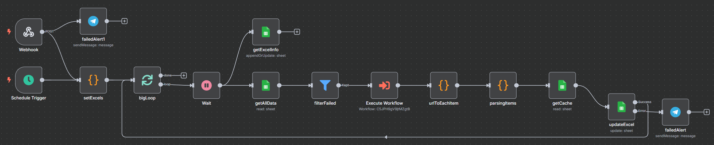
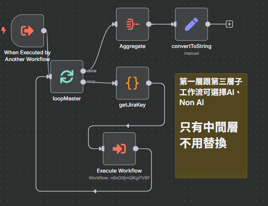

以 n8n + AI 打造 Jira 測試總表全自動化
「原本一週只能更新兩次的測試總表，我用 AI + 自動化做到每天更新兩次，還多省 93% 時間！」
項目概述
測試團隊依賴人工更新 Excel 測試總表來追蹤 Jira ticket 狀況，這份總表是跨團隊 review 會議的重要依據。然而，這個流程非常耗時且容易出錯：單次更新需耗費 2.5 小時以上，導致資訊更新頻率低，進而影響測試覆蓋率與決策速度，Review 會議中也常因等待查詢 Jira 而打亂節奏。
為了解決此瓶頸，我設計了一套基於 n8n 的自動化工作流，串接 Jira API 與 Excel，並搭配 AI 自動摘要功能，讓測試總表能每日兩次自動更新，即時反映專案品質狀況，徹底改變了原有的工作模式。
核心做法與亮點
-
每日多次自動更新將過去每週最多兩次的人工更新，提升為每日兩次的自動化排程，確保所有利害關係人都能掌握最即時的資訊。
-
AI 智慧摘要利用 AI 自動分析並摘要 Jira ticket 中的所有討論紀錄，將冗長的對話轉化為精簡重點，大幅加速會議中的 review 效率。
-
格式化與 Emoji 呈現自動化的報告不僅更新數據，更透過格式化與 Emoji 標示，引導讀者快速識別重點，提升報告的易讀性。
-
團隊貢獻這個工作流不僅節省自己大量時間，也分享給同仁使用，讓效益倍數增長。
成果展示
以下為此工作流的實際運行截圖：
最終 Excel 產出成果

主工作流 (Master Workflow)
子工作流 (Sub Workflow)
孫工作流 (Grandchild Workflow)
價值與影響
-
效率提升 93% 單次更新時間由 2.5 小時大幅縮短至 10 分鐘，每週為團隊釋放超過 4 小時的寶貴人力。
-
提升資訊即時性 從每週更新兩次到每日更新兩次，確保團隊能基於最新的數據進行決策，降低風險。
-
加速跨部門溝通 AI 摘要讓會議不再需要花時間等待讀取 Jira，大幅提升 review 會議的溝通效率。